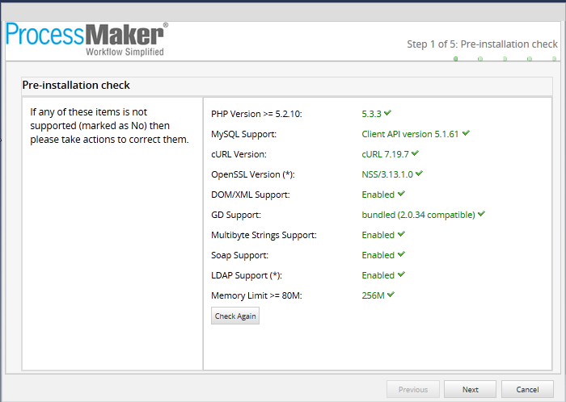
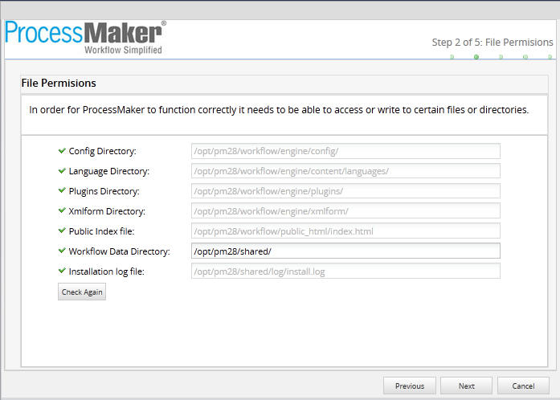
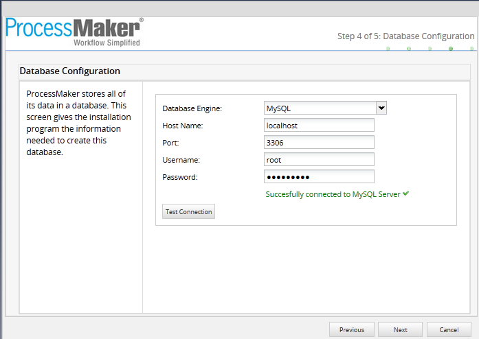
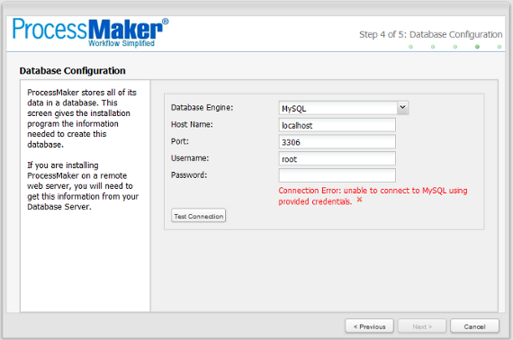
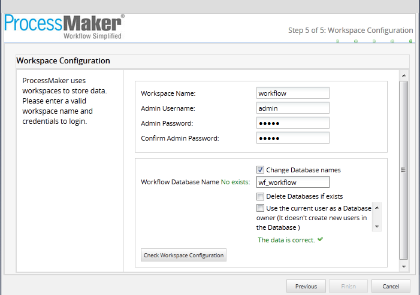
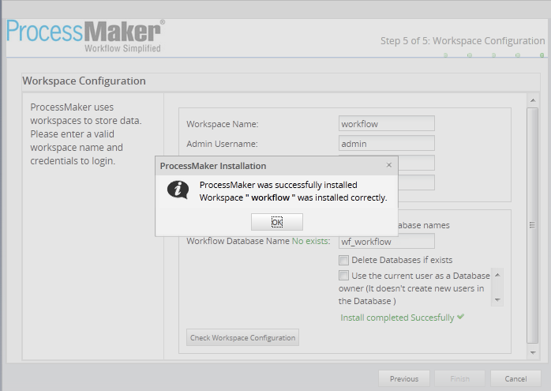
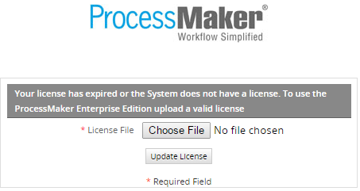
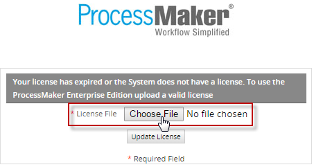
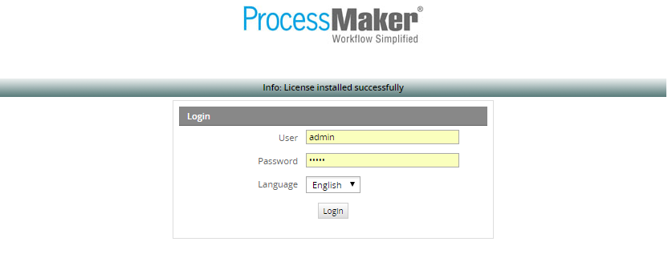
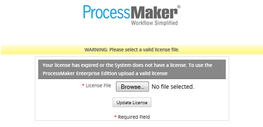

Overview
This guide explains step by step how to install ProcessMaker Enterprise Edition 2.8 in a generic Linux/UNIX environment.
Requirements
Make sure to have received the email with the "Enterprise Edition Link" of the page where ProcessMaker Enterprise Edition is available and the corresponding code that will allow downloading the product. Also, in the same email the license of the product will be sent. The license includes the plugins and the features acquired with the product.
Before installing ProcessMaker, check out the ProcessMaker Installation Requirements and browser compatibility.
Note: In some hosted servers the get_headers and apache_request_headers functions may be disabled, which prevents ProcessMaker's REST API from working correctly, since the REstler library uses those functions. Make sure to enable these functions.
Getting ProcessMaker Enterprise Edition
After acquiring the Enterprise Edition of ProcessMaker, an email is sent with the corresponding link and code to download the product. Go to the download page, read the commercial license, enter the code sent in the email in the field "Download Code" and agree to the terms and conditions outlined in the ProcessMaker commercial license.

After clicking on "Download" the download of installer initiates.
ProcessMaker Installation
Linux Distributions
Step 1: Extracting ProcessMaker
It is recommended to install ProcessMaker under the /opt directory, since it is an add-in application which doesn't come from the standard repositories.
Once ProcessMaker has been downloaded, save it to the server where ProcessMaker will be installed. Use the tar command to decompress the tar.gz file in the /opt directory (or where ever installing ProcessMaker):
This will create a new processmaker directory, containing all the ProcessMaker files and subdirectories.
Step 2: Set File Permissions
After installing the ProcessMaker files either from the RPM package or from the tarball, make the following subdirectories writable for the "apache" user, so ProcessMaker can write to certain directories:
chmod -R ug=rwX,o= /opt/processmaker/
chown -R apache:apache /opt/processmaker/
Step 3: Apache Configuration
Edit the ProcessMaker configuration file to fit your environment:
- vim /etc/httpd/conf.d/pmos.conf
Replace your_ip_address and your_processmaker_domain with the IP address and domain name used by your ProcessMaker server.
# the ServerName with you own subdomains.
NameVirtualHost your_ip_address
#processmaker virtual host
<VirtualHost your_ip_address >
ServerName "your_processmaker_domain"
DocumentRoot /opt/processmaker/workflow/public_html
<Directory /opt/processmaker/workflow/public_html>
Options Indexes FollowSymLinks MultiViews
AllowOverride None
Order allow,deny
allow from all
ExpiresActive On
<IfModule mod_rewrite.c>
RewriteEngine On
RewriteCond %{REQUEST_FILENAME} !-f
RewriteRule ^.*/(.*)$ app.php [QSA,L,NC]
</IfModule>
</Directory>
</VirtualHost>
Note that on this version the rewrite rules have changes so make sure to have them inside your pmos.conf file.
Replace your_ip_adress with the IP number or domain name of the server running ProcessMaker. If only planning on running and accessing ProcessMaker on your local machine, then use the IP address "127.0.0.1". If using ProcessMaker on a machine whose IP address might change (such as a machine whose IP address is assigned with DHCP), then use "*", which represents any IP address. If not using the standard port 80, then it is necessary to also specify the port number.
After adding the web site pmos.conf and enabling modules, it is necessary to restart the Apache web server:
Step 3: Non-standard Port
If running ProcessMaker off a port other than the default port 80, then add the following line to the httpd.conf file:
For instance, if running ProcessMaker from the local machine at port 8080:
Or simply:
Note: If Apache is using the default port 80, then configure other programs (like Skype) to not use port 80. Check whether a program is currently listening on port 80 with the command:
To configure Skype to stop listening on port 80, press CTRL+O or go to Tools > Options. Under the Advanced section of the "Options" dialog box, go to the "Connection" section and enter an alternative port for Use port [ ] for incoming connections.
Step 4: Setting up ProcessMaker
Finally, once all ProcessMaker configurations were set up, open a web browser and enter the IP address (and port number if not using the default port 80) where ProcessMaker is installed. For instance, if ProcessMaker is installed at the address 192.168.10.100, then go to:
If using ProcessMaker which is installed locally at port 8080, go to:
Additional Configuration
In case of having errors with the mycrypt extension, even if it was enabled, follow the steps below to fix the problem:
- Change the path of the mycrypt.so file location. Use the command line and write the locate command in order to find the path.
- Look for the mycrypt.ini file and open it.
- Copy the path of the mycrypt.so file in the mycrypt.ini file.
- Restart apache.
Step 1 of 6: Pre Installation
The first step will start with the pre installation check, showed up as below:

This will check versions installed from PHP, MYSQL, cURL, and NSS; if some of them are not correctly installed, they will be marked as No, and they may need to be checked on previous configuration.
Step 2 of 6: Directory File Permissions
Then you will see the file permission as it follows:

If there is a problem with some files or directories, check again permissions given on previous configuration.
Step 3 of 6: ProcessMaker Open Source License
ProcessMaker Open Source License will display, if everything on terms explained on the document, check on I agree and Next to continue the installation:

Step 4 of 6: Database Configuration
Check out the Database Configuration by testing the connection, write the credentials for the Database and click on Test Connection

In case of error with the connection, the window showed below will appear like this:

Step 5 of 6: Workspace Configuration
Configure the workspace, and the name of the database where all information about the process will be stored. Unlike previous ProcessMaker versions, in this version the three databases(wf_,rb_ and rp_) are unified it means it will now run on one internal database (wf_)

If you have made a successful connection, the last dialog box will appear with the legend: ProcessMaker was successfully installed

Once ProcessMaker was installed, the login screen with the user and password will display:

Step 6 of 6: Activating the License
In the login page, click on "Choose File" to upload the license.

After selecting the file click on "Update License" to upload it.

If the license is valid, after refreshing the page, the following message is shown in the login page.

If the license is not valid, a message like the following is shown.

Note: DO NOT modify the name of the license. This alpha-numeric generated name contains the specific information of the ID related to the ProcessMaker license server in which it was generated. If this name is modified or any prefix/suffix is added to it, it may cause some issues in ProcessMaker.